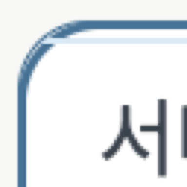
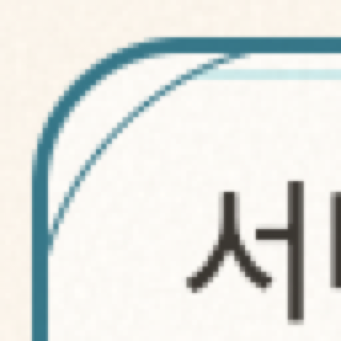

자기소개 입력칸 · 포커스 테두리가 모서리에서 깨지는 문제
입력칸을 누르면 바깥 종이와 안쪽 입력칸이 각자 테두리를 그려요. 두 테두리의 둥근 정도가 달라서 모서리에서 선이 두 갈래로 갈라지고, 맨 윗줄 밑줄이 그 틈을 가로질러요.
지금 앱 · A 하늘 편지 실제 캡처 6배
주신 화면과 같은 모양이 재현돼요. 굵은 선 안쪽으로 가는 선과 하늘색 줄이 따로 보여요.
지금 앱 · B 여름빛 필름 실제 캡처 6배
B는 입력칸이 더 둥글게(28px) 깎여서 가는 선이 모서리 안쪽으로 크게 휘어 들어가요.
왜 이렇게 보이나요
- 1테두리가 두 개예요. 종이(
.st-paper)가 포커스 때 1.5px 선을 그리는데, 앱 전체 입력칸 공통 규칙(nov08.css332줄,!important)이 안쪽textarea에도 0.5px 선을 또 그려요. 자기소개 쪽에 적어 둔box-shadow:none이 이 규칙에 져요. - 2두 테두리의 둥근 정도가 달라요. 종이는 14px인데, 같은 공통 규칙이 입력칸을 버튼 반경으로 깎아요. A는 12px, B는 28px이에요. 그래서 직선 구간에서는 겹쳐 보이다가 모서리에서만 갈라져요.
- 3맨 위에 줄 하나가 더 있어요. 줄무늬가 위쪽으로도 반복돼서 3~4px 위치에 줄이 하나 생기고, 그 줄이 테두리 바로 밑을 좌우 끝까지 지나가요. 줄이 테두리 위에 그려져서 모서리에서 테두리를 덮어요.
지금 vs 개선 · 직접 눌러 보기
위 입력칸은 실제 크기라 눌러서 써 볼 수 있어요. 아래 상자는 같은 입력칸의 왼쪽 위 모서리를 8배로 키운 거예요.
지금 두 겹
왼쪽 위 모서리 8배 (포커스 상태)
123
개선 한 겹
왼쪽 위 모서리 8배 (포커스 상태)
✓
무엇을 바꾸나요
- 1테두리는 종이 하나만 그려요. 입력칸 자체의 포커스 선은 없애고, 종이 테두리를 입력칸 위 층에 그려서 줄무늬가 스크롤돼도 테두리를 덮지 않게 해요.
- 2입력칸 모서리는 종이를 따라가요. 입력칸 반경을 종이에서 물려받게 해서 A든 B든 모서리가 한 곡선이에요.
- 3맨 위 줄을 없애고 줄을 좌우 14px 안쪽에서 끝내요. 줄은 글자 칸 안에만 그어져서 둥근 모서리나 테두리와 닿지 않아요.
글꼴, 줄 간격, 줄 색, 입력칸 높이, 포커스 색과 두께(1.5px)는 그대로예요. 바꾸는 곳은 public/nov08.css의 자기소개 입력칸 규칙 몇 줄이고, B 테마도 같은 규칙을 써서 함께 고쳐져요.
#story .st-paper{box-shadow:none}
#story .st-paper::after{content:"";position:absolute;inset:0;border-radius:inherit;pointer-events:none;
box-shadow:inset 0 0 0 1px var(--color-border-default);transition:box-shadow 160ms ease}
#story .st-paper:focus-within::after{box-shadow:inset 0 0 0 1.5px var(--color-border-focus)}
#story .st-paper textarea,#story .st-paper textarea:focus{border-radius:inherit!important;box-shadow:none!important}
#story .st-paper textarea{background:repeating-linear-gradient(to bottom,transparent 0 31px,var(--story-rule) 31px 32px)
14px 4px / calc(100% - 28px) calc(100% - 4px) no-repeat local}